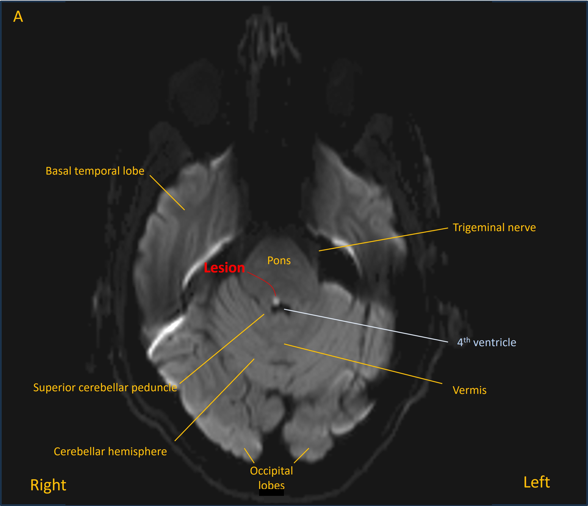
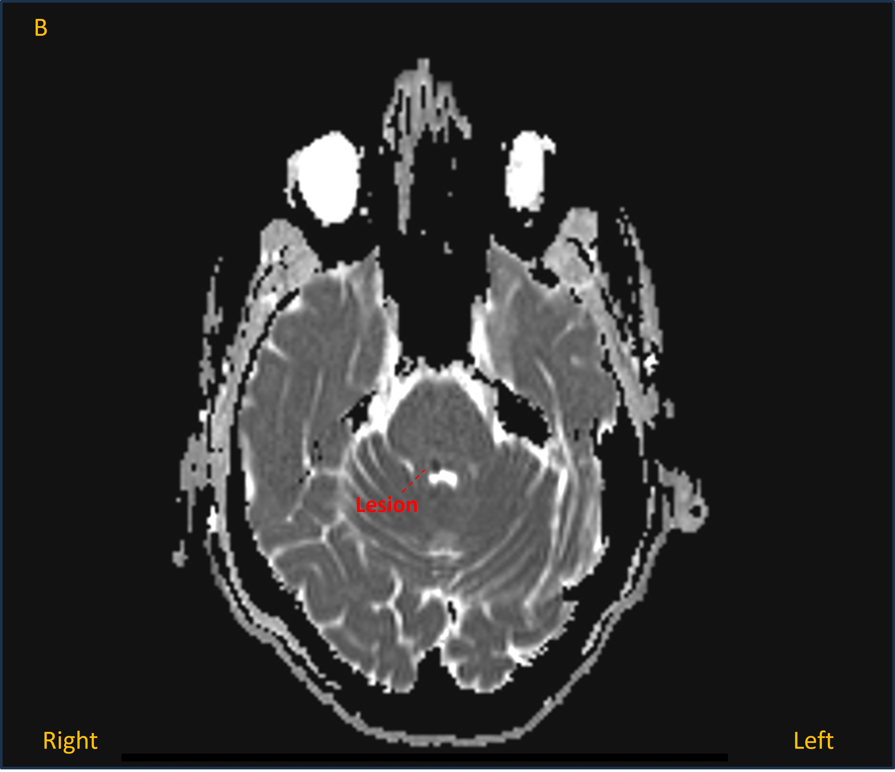

Case 18 - Double vision and jumping eyes
Outcome
A CT head was unremarkable, but has low sensitivity for many lesions in the posterior fossa, so an MRI was performed. This showed an acute lacunar infarction in the right dorsal upper pontine tegmentum - bright on diffusion-weighted imaging (image A) and dark on apparent diffusion coefficient map (image B).


The patient was managed with antiplatelets and secondary prevention including statin and blood pressure control. He was told not to drive given diplopia. He had follow-up with ophthalmology services to manage the diplopia.
His symptoms and ophthalmological abnormalities resolved within 3 months.
Final diagnosisAcute diplopia with right INO, skew deviation and upbeat-torsional nystagmus due to a lacunar infarction in the right dorsal pontine tegmentum.
Key points